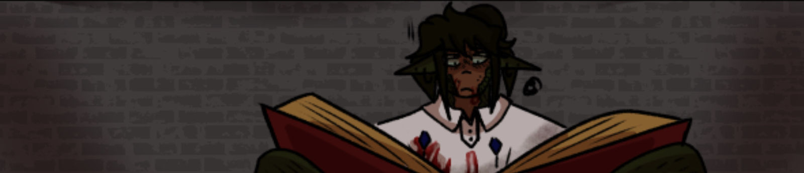
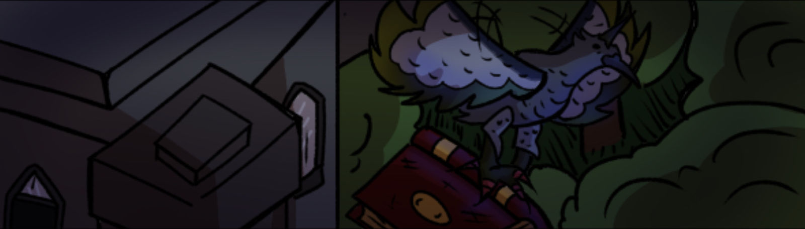
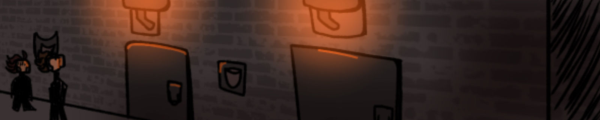
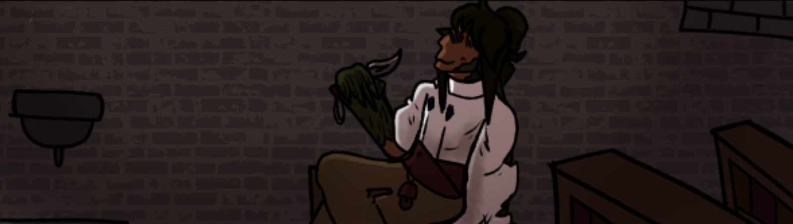
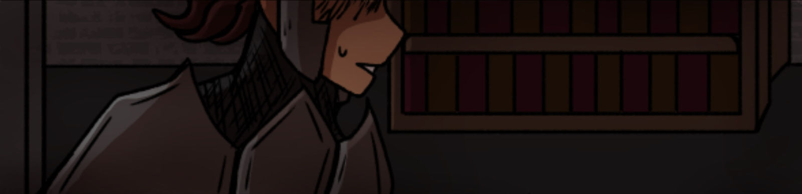
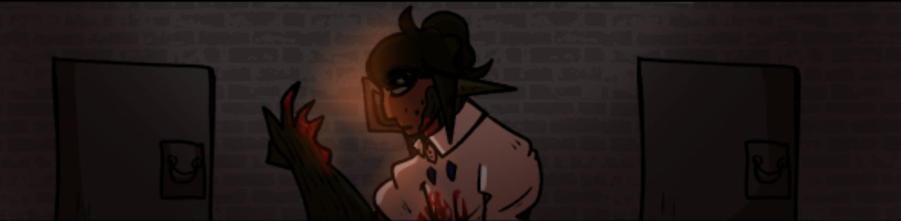
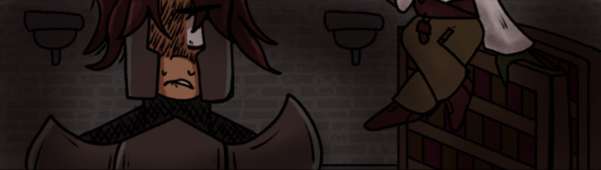

A Thief's Gambit #2

A Thief's Gambit Part 2
"...Based on the other clues, the caverns should be about...here."
Demetrius knelt over the ocean, peering into the depths. His gaze zeroed in on a huge chunk of salt, dissolving into the waters whilst also providing him an opening just large enough to be able to enter the caverns. Demetrius stood up.
"..Ehh, i'm still hung up on the sacrifice thing. What do you reckon this guy'll want?"
As he spoke, the green fur on his cheek expanded over half his face. The eye that laid on that side sprung forth about four pupils, each colored very brightly. The Entity's voice got even louder.
"Is that really the biggest concern? If this 'WishMaker' asks something too hard, you COULD just absorb this thing's soul!"
The parasitic entity cackled out gleefully, much to Demetrius's annoyance. The irony wasn't lost on him.
That being this very being caused him to seek out a way to sever the tie between them, and yet he still asked for its input. This parasite (it calls itself Arthur, apparently.) had been tied to the thief's soul for quite a while. It served to plague him with irritation, especially at night. Demetrius hadn't known a good night's sleep for nearly a decade.
"..You mean celestial power? You can't do that without shattering the soul. Plus, the LAST thing I need is another voice keepin' me up at night."
The Parasite screeched out angrily in response.
How bothersome.
With that, Demetrius plunged into the water.
The minute his body made contact with the ocean, his body shrank down instantly, his height only becoming a mere few feet, while his length grew rapidly as he formed into that of an Orca whale. Demetrius wasted no time, slowly gliding across the ocean as he descended into the depths. He reached the ocean floor, hovering a few feet over the sandy ground as Demetrius began to look around. The accursed green fin that had plunged into the whale's stomach didn't take too long before it began to hinder his progress.
The whale began to tilt around to the right, its blubber scraping against coral and rock. When the whale tried to set itself upright, its body tilted once more, this time towards the left, grazing the side of its face painfully. The whale quickly picked up the pace, swimming faster to keep its momentum.
"Pathetic display of Shapeshifting, And what do you mean you CAN'T absorb souls?? That's how we ended up together, is it not??"
The voice pierced whatever was left of the serene atmosphere. Demetrius internally groaned.
...I'm not running that risk again, Arthur. The last thing I wanna do is strengthen your ability to puppet my body! Besides, if you really wanted to, can't you just tear yourself out of my body? You're supposed to be way past my limitations, Deity of the Past.
"Alas! No matter how much celestial power I take from the souls of this world, nothing has been done to release me!!"
...You mean massacring random villages with my body?
"Well, how else?"
Something tells me you're a fat liar. You probably have tons of that power stored away!
The whale lifted its body upwards, entering a narrow passage, coated thinly in crystal. While the cave's small size made sure the whale wouldn't tilt over, it was that same size that cut and sliced at the whale's skin further due to the sharp pointed rocks that had yet to smooth out. By the time the whale made it into a wider portion of the caverns, its scrapes and cuts were enough to rival that of a hardened warrior. Nevertheless, The whale ascended upward to a wide opening. A bright light flashed for a moment before Demetrius popped his head out from the cold water, holding himself over the rocky floor and raising his leg over the edge, toppling over.
"...Your damned influence is the cause for my shifting shortcomings, by the way. That wasn't a problem beforehand."
The two guards continue their patrol, thoroughly checking the library's many sections.
"Archives are clear."
"Celestial Power Management is clear."
"Records are clear."
Xandria shuffled out of the Records, locking the door behind him. He looked around.
"Allan?"
The other guard hadn't yet returned from his section. Xandria approached the section across from his own. He peeked into the room.
"Allan..?" Xandria called out. The section was dark, filled with books, scrolls, and occupied with a rounded table. Its walls had been sparingly covered with scones and braziers. The fires that were supposed to be dimly lighting the room had been put out. The man grew wearily, eyes narrowing while his eyes tried to see through the darkness.
Xandria barely had time to react to his soul fluctuation highlighting something new before a small throwing knife shot out from the darkness, grazing his cheek. Xandria leapt out of the sectioned library, unsheathing his sword.
"You! Show yourself! No one is allowed to enter the Grand Library of The Institute!" he hollered out. A few seconds had passed before a large figure took a step forward, significantly taller than the guard's own height, their face still being shadowed by the dark room. Xandria didn't hesitate, charging at the figure with a direct aim to its chest with his sword.
Shunk!
Thud!
Xandria stepped back, holding his sword as what he took to be the intruder toppled over to the ground. The guard's eyes widened.
"..Yeesh, The Institute REALLY downgraded on their security within this old place." A loud, mocking voice echoed from behind him as Xandria ran to Allan's fallen body. "I mean, this place SUPPOSEDLY has the most powerful spells known to kill whoever casts it, yet they implement you sorry excuse of security."
Xandria watched in horror as Allan bled out onto the library floor, unconscious. His celestial power drained from the body it once kept alive, seeping into the cracks of the floor. Without it, the body quickly turned a lifeless grey color. Xandria whipped around, face contorted in rage as he turned to face the perpetrator.
"You..!" He spat out angrily.
The thief was now seated onto one of the library's shelves, his demeanor relaxed, with one leg over the other. His left claw, mostly covered in green fur, held more copies of the same throwing knife he had used to provoke the guard, while his other hand was holding his body upright. The man's face had a satisfied smirk on his face, his green elven ears reflecting his joy at the guard's misery.
"Yes, it is I, yours truly!" The man responded gleefully.
"I'll cut you down right here! How stupid are you to enter a place as grand as this?!"
"I'd say you are the stupid one, you killed your partner, after all." The thief yawned, hopping off of his shelf.
"But honestly? The real idiots are the guys who posted you here. Rookies? Seriously?"
"Shut your mouth!" Xandria shouted angrily. Having enough of the thief's mockery, he raised his sword once more, charging at the thief and slashing wildly.
"Watch it there, you're leaving yourself open!" The thief weaved past Xandria attacks effortlessly, taunting the guard. Xandria became more riled up at this game, swinging for any attempt to kill this filth.
How dare they waltz in here and trick me with these mind games!!
The thief slid towards Xandria's side, kicking at the guard from his right side. Xandria stumbled back.
When he stood back up, the last thing he saw was the thief, standing only inches away from him.
"Jeez, what a pain. I was hoping to leave without bloodshed too.."
Demetrius sighed out, pulling his knife out from the guard's head. The corpse slid down the library shelf, leaving behind a blood trail. Demetrius backed up, looking down at his attire. His dirtied white shirt had been splattered in blood, as well as his leathered boots. The knife he held was also coated with the blood of the guard. The thief briefly attempted to rub off the blood, walking out of the room.
"Alright, now that that's taken care of... Where do I find the Curses section..?" The thief looked around, sheathing his bloodied knife onto his belt as purple eyes scanned each section's label when he ventured deeper. Another thought hit him as he headed down the hall.
Would this even count as a curse?
Demetrius lifted up one of his arms, inspecting it with dissatisfaction. He'd continue down the stone halls, only occasionally stopping to take a closer look at the section names. The halls were long, its walls littered with cracks and signs of decay. Not only that, but the thief swore he could hear rats scurrying down here. Truly a victim of time.
Finally, Demetrius stopped at a large door at the end of the hall. This door was large, durable, and contained a lock on the door's handle, nothing like the previous doors he had passed through. The thief plucked his hair pin from his head, fumbling with the lock until he heard a click!
Pushing the door open, Demetrtius walked into the eerie section. The first thing he saw inside was the grandfather clock a few feet away from the doorway, its hands remained at the time it had presumably stopped working. The room's walls meanwhile were covered up in shelves of books, coated with a small layer of dirt and grime. Towards the center of the room, there were more shelves similar to that of the last room he had been in, the only difference being the abundance of more shelves and a tattered red carpet added.
"This place definitely has seen better days since the last time I was here.."
Demetrius surveyed the room, picking the shelf to his left as his starting area. The man searched for a book, plucking out one that caught his intrigue. When nothing came up of it, he would toss it, picking out another book and repeating the process.
"Oh come ON! There's gotta be something in this dusty ol' place!"
Demetrius chucked another book onto the pile, sighing irritably. The thief's pile of books had started growing larger, nearly reaching the ceiling. The sweat on his face had started being absorbed by the irritable green fuzz on his face as his exhaustion grew. At this point, Demetrius had simply resorted to skimming the pictures before discarding it onto the pile. Climbing up the ladder, he went higher.
The man reached higher, standing on his tip toes and shoving any stray dark green strands of hair that bothered him. As he was getting ready to discard a different book, something glittered from the corner of his eye. With a raised brow, he dropped the book he had and slid over.
The book that caught his attention was a hardcover, with maroon red in its color, and adorned with golden accents. Blowing off the thin layer of dust and flipping through it, Demetrius's attention fell on a certain riddle.
"...May ye find mercy from the lord,
He who had spared us from this world
May ye gain his favor
For his hand will grant all that you seek
Tread with caution
For even his hand is not so godly
From deep within the caverns
A Sacrifice may be all that he seeks..."
Demetrius raised a brow. His hand will grant all I seek?
A sacrifice may be all that he seeks..?
What kinda wish wash is this??
Demetrius looked over the pages. Legend of the Crystal Cavern.
"..The Crystal Caverns, eh? Haven't heard about those in a while..."
The man pondered for a moment, staring at the poem once more.
His hand will grant all that I seek.
All...that I seek.
"...Well, might be worth scoping out the area."
Worse case scenario, I wasted my time and garnered a higher bounty number...
Demetrius strolled out of the room, tucking the Book under his arm and locking the door behind him. The thief would then shuffle down the hallway, going back the way he came as he looked for the nearest window.
The window he chose for his escape was quite tall in size, located in the Celestial Spells section. The glass panes thankfully were able to be lifted from the inside, letting the cool breeze of the night inside. Demetrius sighed out as the wind hit his face, indulging himself for a moment before backing up and kneeling down onto the floor, setting the book upright where the spine was faced towards the ceiling.
"Alrighty, back the way we came.." Demetrius sneered. With his right hand, the thief would bring it over his heart, pulling out the threads of his very soul out of the flesh of his core. These threads would begin to quickly wrap around his entire frame, shrinking his form rapidly until the threads eventually fell back, revealing his avian form.
The bird stood at the height of a pigeon, a small stature that allowed it to venture out relatively undetected...At least, it would have been the case, had it not been for the elongated green horn that stuck out from its head. It added unnecessary weight, which was not ideal for flying. It's feathers within were adorned with a gradient of a lighter green that covered the corners, before fading out into a much darker blue, then back into a gradient of a light blue near the base of its body.
It wasted no time, stretching out its long wings and taking flight and snatching the book within its claws and flying out, cawing along the way as Demetrius thought about the poem, and its message.
Grant all that I seek, huh...





